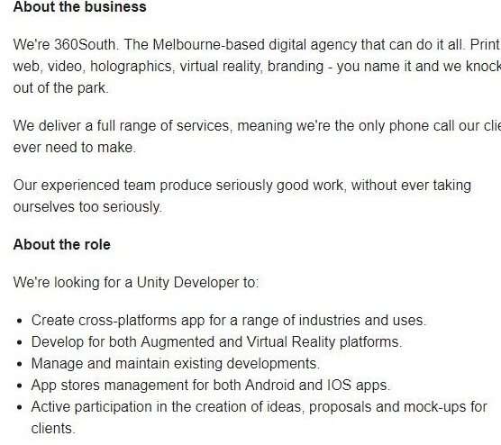
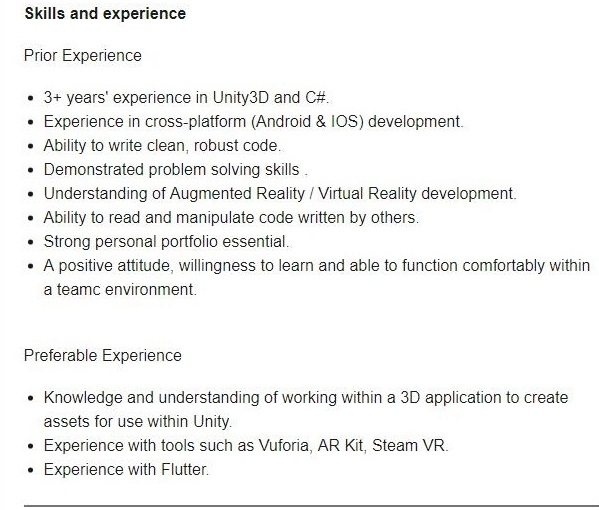

Personal Information
My name is Danny Nguyen, S3784550, my email is S3784550.@student.rmit.edu.au, my nationality is Vietnamese nationality and culture, so far my education has just been primary school and high school with a bit of Vietnamese on the side but ended it at year 10, I can speak English and Vietnamese, and a bit of Japanese. An interesting fact about me is I had a twin brother.
Interest in IT
My interest in IT is pretty much anything to do with new technology, but if I want to be more specific it would be something along the lines of augmented reality. My interest in IT started when i was a kid when i first had a computer, it fascinated me when i was young on how "complex" it was to me when i was as a kid and from the start of that it made me interested in very similar technological things although the technologies weren't as advanced at those times compared to now.
So far my IT experience is pretty much limited to school work, doing certificate of information technology, programming classes and info technology. I chose RMIT because it looked like the best and it pretty much represents technology as it has technology in the name, I've heard a lot of decent reviews about it.
I expect to learn about the latest technology, coding, pretty much anything to do with technology since the topic is so broad.
Ideal Job
 This appeals to me a lot as this helps me work on my project idea on augmented reality i really like to see new technology get developed, and if augmented reality is advanced enough in the future it can really make a difference to an everyday lifestyle and its pretty exciting looked at a virtual world instead of the dull real one sometimes. This position essentially just works on the new technology augmented reality. experience with developing IOS/Android applications, Communication skills as well as develop my own personal skills for the job.
So far I have experience with just a bit of coding however its not the ones listed on the list. But I could use the experience i have so far understand the gist of things and I have an O.K experience of problem solving things myself specifically coding so I would have some experience in that are specifically.
If I were to plan to work on that job in the future I would first practice developing apps with the mentioned coding languages, and be willing to work with groups and persistent in anyway to help develop applications and such and improve myself as a person. And try to mess around and test out augmented reality gear such as the Oculus rift, Vive and similar and try to see how they work.
Personal Profile
Myers Briggs test
Mediator (INFP-T)
Learning Style Test
Auditory/Tactile
Big Five Personality Test
Openness -50%
Conscientiousness – 29%
Extraversion - 27%
Agreeableness - 52%
Neuroticism- 73%
What I think about the results:
For the results i don't think it means to much as long as i just work as a team and do my job. But I should always keep these results in mind when I feel like I'm acting too extroverted, too idealistic or anything it should always be something I keep in mind when I'm doing work as a reminder of what I should be doing or acting like.
I could take this into account by just talk to my team more since the results say I am extroverted, and if i don't open myself up or talk much it would just make whatever group project I'm doing harder due to lack of communication and make it harder for people to get to know me.
I should also be a bit more open for new ideas as being impractical isn't the greatest for when the team wants to offer group suggestions, instead of possibly me picking a too idealistic scenario. I shouldn't take criticisms personally and instead look at it as feedback on how i can improve on work. It also means I should decide to work more instead of what i feel like doing in the moment. I should be a more realistic person instead of doing what i want and be more self disciplined. Since I am an auditory and tactile learner i should try to read more things out loud so i can understand the work much easier, as well and try to actually do more things hands on to remember things easier and to learn better so i should do a combination of both when I'm doing work.
Project Ideas: Augmented Reality
Essentially what i want to work on is a game that can work with augmented reality, however even though there are games like Pokemon go. I want to make it really advanced much more then the HTC Vive and actually make the person somehow fully immersed in the reality where essentially the user would not have to require so much peripherals and items just to make augmented reality work. The hardware I want to make would simply just put you in a virtual world with ease.
The main thing is other hardware such as HTC Vive pro and the Oculus Rift. It requires a lot of setting up to use, such as setting up sensors, controllers, headgear all in all it feels pretty clunky using it when we compare other technologies, such as old mobile phones where it was very big and clunky and couldn't really bit fit into your pocket when your out and about and it didn't have very many uses besides only calling. But now today mobile phones are essentially mini computers and are much smaller and can easily fit anywhere without much hindrance to the user and is now being used everyday. Trying to create hardware just to make augmented reality hardware just simpler to use is the first step to making it better.
The product would essentially just be one piece of hardware including a general full setup of the preexisting required gear from the HTC Vive or the Oculus Rift such as sensors, Screen, Controllers. The hardware would have infra red sensors to detect where the person is in a room and possibly some other location sensors for it to sense the whole area of the room the hardware is in. Instead of controllers where the person would normally use it to act as if it were their hands, instead with this new hardware they could use their own hands to interact with things around them without requiring any special gear or equipment to act in a virtual reality.
The hardware would include surround sound features so when interacting with the virtual objects anywhere in the room for example a vase drops it would sound as if it dropped right in front of you if you were near it, or if it were far away and it dropped it would sound not as loud creating a more immersive experience. The headgear where it is used to make the user see the "augmented reality, or virtual reality" would also be removed and instead the hardware would have a projector that displays the augmented reality so the room the user is in is the virtual reality right in front of them instead of a screen strapped on right onto the users head in comparison. So the virtual reality included in their room the user will be able to interact with it, by simply acting with objects how they would in real life and the senses would automatically pick it up and they can hold virtual items. The hardware could be used for games, simulations/ experiences and communication with 2 users being able to interact with each other. Similar to the holograms seen in star wars. The hardware shouldn't take too much room and can be placed pretty much anywhere as long as the sensors can detect the room,objects and people inside the room, the hardware should be as big as a modern console. The problem with this idea of the hardware however it would be very hard to make the device not too large as it contains all the functionality of a current virtual reality hardware all into one thing. So its possible the device not look to practical or the current technology to make a reasonably sized device is not there yet.
The software needed is possibly games or anything for the hardware, so that the person who uses the hardware actually has something to interact act with whether it could just be a scenery where they can watch in their rooms around the, or a game they can interact with. So coding software such as C++ might be needed or something such as Unity 3d. To create the hardware I would assume it would be automatically produced by robots.
Programming skills would be required to make the software for the hardware device. And also engineering skills to create the hardware being able to wire and build the technology required to make the hardware. I think it would be feasible to find these skills as these skills are pretty common to find in the IT industry.
Outcome:
If the project is successful hopefully it will just be like a next generation thing where people will replace their current virtual reality gear into this one a much more simpler one. It solves the hassle of virtual reality not actually feeling as "real" as it should be and requires much less setup and easier for the consumer to use. Hopefully the impact of this hardware will inspire more people to work on augmented reality and make it much more better and smoother then it currently is.